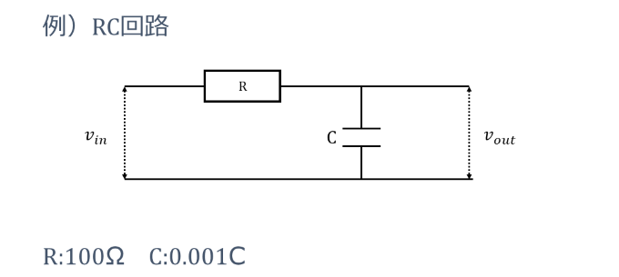
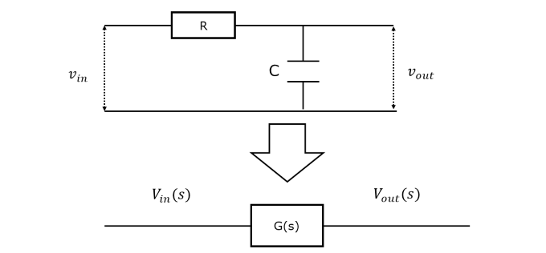
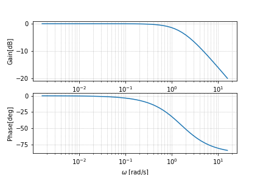

伝達関数の周波数特性
前回は伝達関数について説明していきました。では、伝達関数を知ると何がいいのでしょうか。これは、伝達関数の周波数特性を見ることで恩恵を受けることができます。
例えば、フィードバック制御系の安定性を評価できたり、設計を行うことができるのです。それでは、周波数特性について詳しく説明していきます。
伝達関数はそもそも複素関数です。つまり、伝達関数の絶対値と位相に分けることができます。この周波数依存性をグラフにしたものをボード線図といいます。
位相はそのままの定義で使えますが、伝達関数の絶対値は少し違った定義をします。
\begin{equation}
20log_{10}|G(s)|
\end{equation}
このように定義して、これをゲインと呼びます。単位はdB(デシベル)を用います。具体例を使って実際にボード線図を見てみましょう。
今回はRC回路の伝達関数の周波数特性を例に挙げます。以下のような回路を考えます。
RC回路図
まず、この回路の運動方程式を立てます。
\begin{align}
v_{in}(t) &= Ri(t) + v_{out}(t)\\
i(t) &= C\dot{v}_{out}(t)\\
\Rightarrow v_{in}(t) &= RC\dot{v}_{out}(t)+v_{out}(t)
\end{align}
次にこの運動方程式のラプラス変換を考えます。
\begin{align}
v_{in}(t) &= RC\dot{v}_{out}(t)+v_{out}(t)\\
\Rightarrow V_{in}(s)&=RCsV_{out}(s)+V_{out}(s)
\end{align}
この式から伝達関数を求めます。
\begin{align}
V_{in}(s)&=RCsV_{out}(s)+V_{out}(s)\\
\Rightarrow G(s)&=\frac{V_{out}}{V_{in}}=\frac{1}{RCs+1}
\end{align}
ここまでで、一度このシステムをブロック線図に書き直します。
RC回路のブロック線図
回路図として複雑だったシステムがブロック1つで簡単に表すことができるようになりました。
これはブロック線図のメリットでもあります。複雑なシステムを取り扱えば取り扱うほどブロック線図の威力はより発揮されるのです。
最後に求めたRC回路の伝達関数の周波数特性をボード線図で見てみましょう。
RC回路の伝達関数のボード線図
これはローパスフィルタの周波数特性と同じになります。低周波数帯の信号を通し、ある周波数を境にそこより高い周波数帯の信号は通さないというフィルタです。
このある周波数とは、伝達関数の分母で決まります。分母がゼロになる解である極を求めればいいのです。
そうすると、今回は
\begin{align}
\omega &= \frac{1}{RC}\\
&= \frac{1}{100\times0.001}\\
&= 10
\end{align}
となります。これをカットオフ周波数といいます。ボード線図を見てみると確かにカットオフ周波数を境に信号が減衰しているのがわかります。厳密にはゲインの最大値から3dB下がって、位相が45deg遅れるか進む所をカットオフ周波数と定義されます。
このように伝達関数の周波数特性をボード線図で見ることによってシステムの特徴を捉えることができるのです。